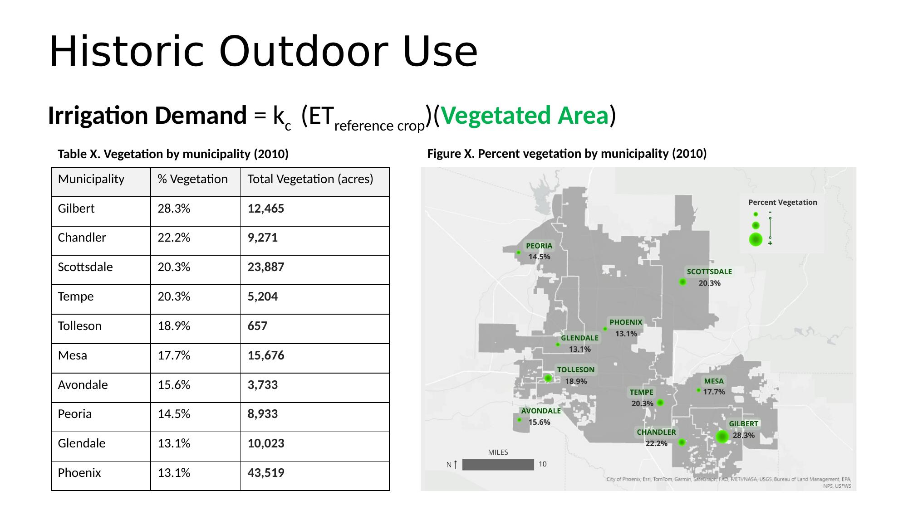
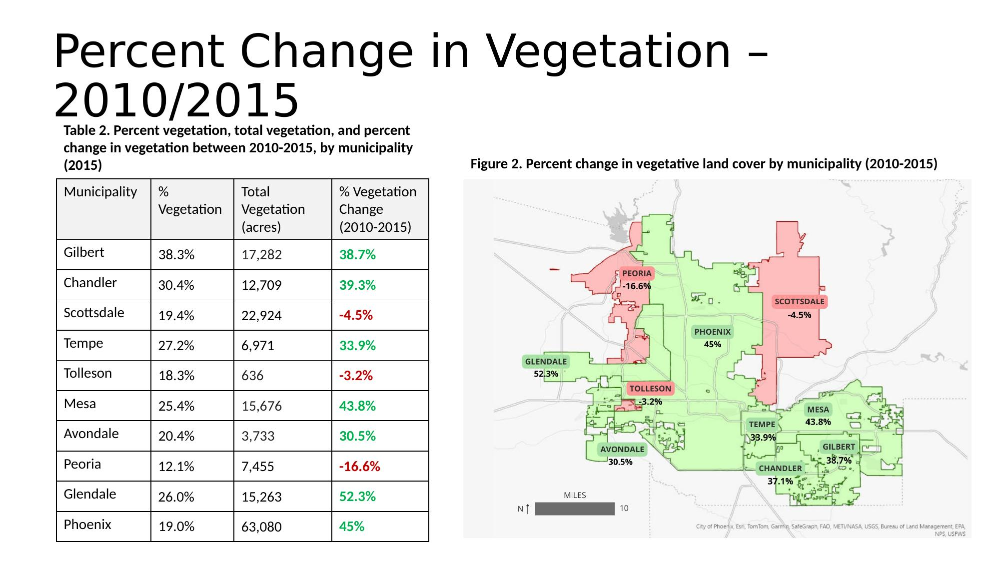
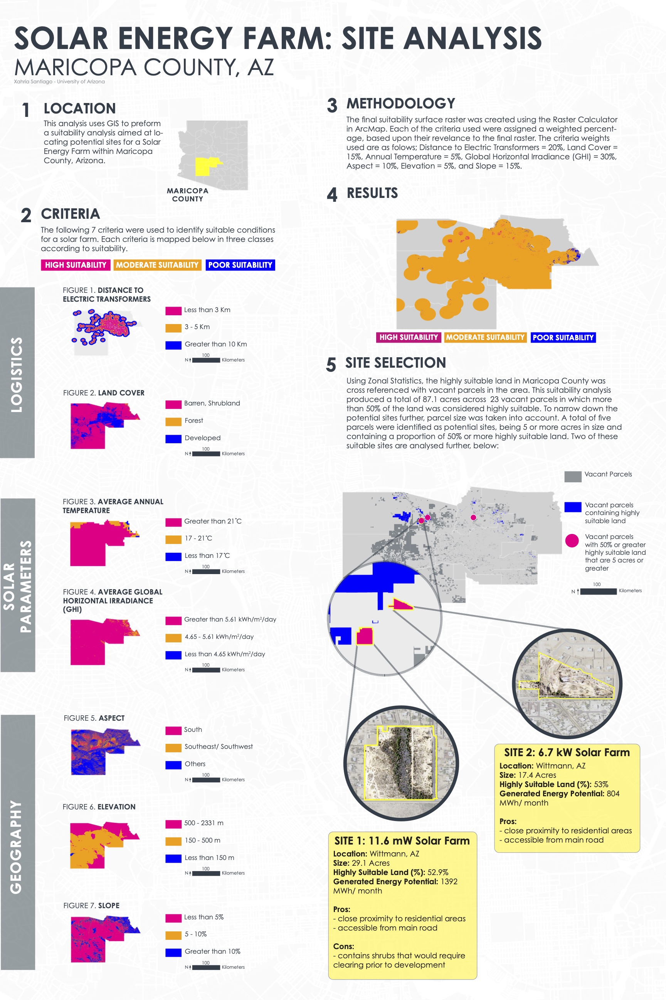
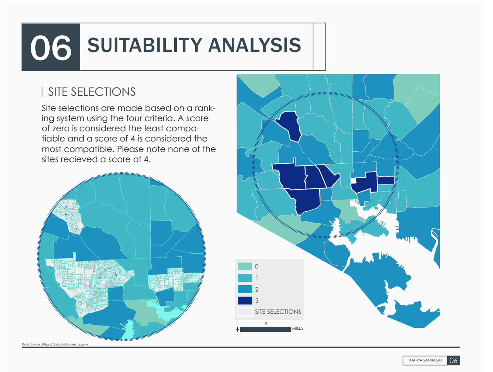
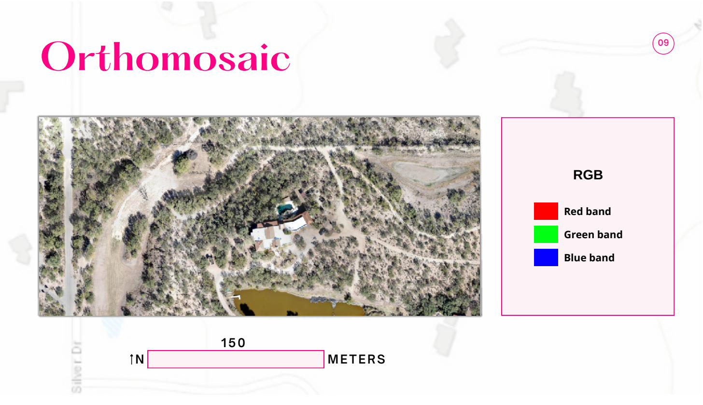
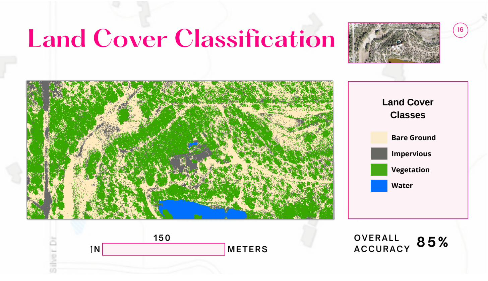
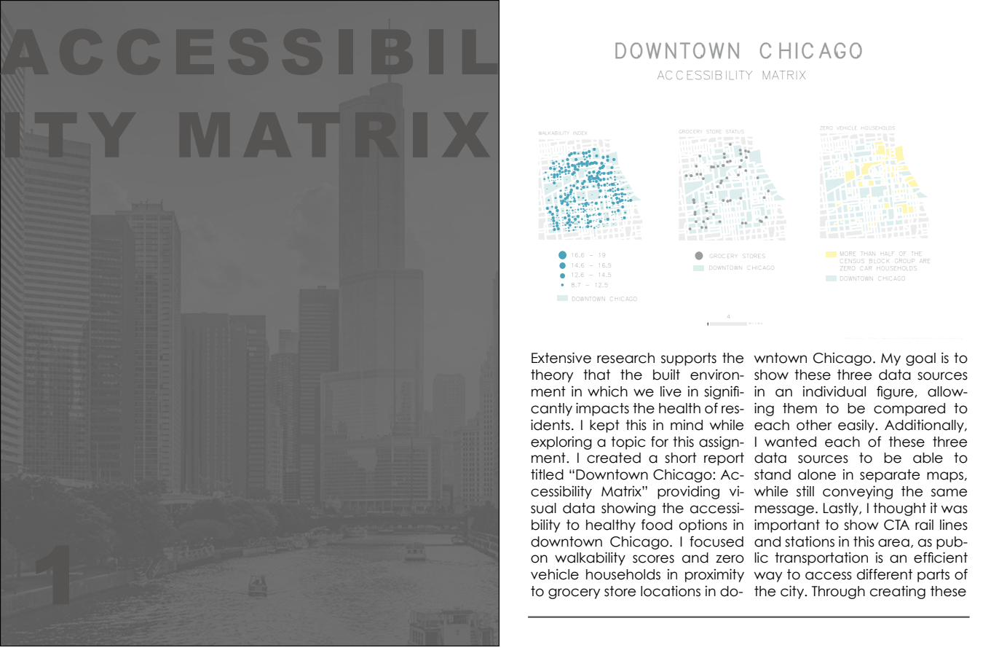
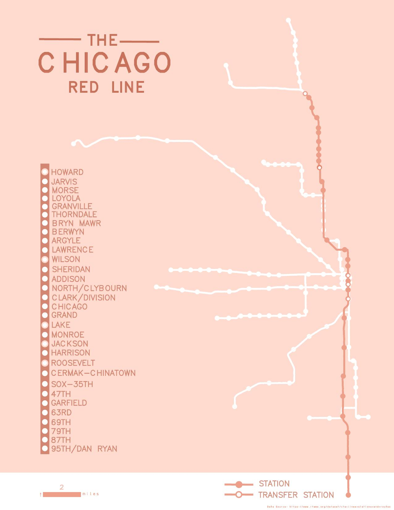

GIS & Spatial Analysis
GIS & Spatial Analysis
Graduate Research & Consulting, University of Arizona / Integral Consulting, 2022–2024
Six analyses spanning climate adaptation, social vulnerability, site suitability, and cartographic design.
Overview
The Salt River Project provides water to 13 cities in the Phoenix metro area. As temperatures rise and precipitation patterns shift, understanding how outdoor water demand will change under different climate scenarios is a critical planning question for the region. This project developed a quantitative framework to estimate those demand changes — accounting for pool evaporation, vegetation irrigation requirements, and historically observed irrigation inefficiencies across all 13 municipalities.
The GIS work centred on classifying land cover from NAIP multispectral imagery for 2010, 2015, and 2021, and using zonal statistics to calculate total vegetated and pool surface area by municipality. Those area estimates feed directly into the Penman-Monteith evapotranspiration equation used to project future outdoor demand under climate scenarios. The work was presented as a conference paper at the 2024 Computing and Control for the Water Industry / Water Distribution Systems Analysis joint conference in Ferrara, Italy.
What this produced
Land cover classifications for 13 Phoenix metro municipalities across three time periods (2010, 2015, 2021), with pool and vegetation surface area estimates by municipality. Results used to calculate outdoor irrigation inefficiency metrics and project water demand changes under future climate scenarios for SRP's long-range planning.

Vegetated land cover by municipality in the SRP service area (2010). Gilbert led at 28.3% vegetation; Phoenix had the largest total vegetated area at 43,519 acres. These figures fed directly into the Penman-Monteith outdoor demand calculations.
Contributions
Methods & tools

Percent change in vegetated land cover between 2010 and 2015. Most municipalities saw significant growth (Mesa +43.8%, Glendale +52.3%), while Peoria, Scottsdale, and Tolleson declined — a pattern with direct implications for projecting future outdoor irrigation demand.
Overview
This assessment evaluated social vulnerability across all census block groups in Marina, CA, a coastal community in Monterey County facing compounding risks from sea level rise, coastal erosion, and climate-driven hazards. The analysis was conducted at Integral Consulting and the final report is a client deliverable; what's shown here is the working methodology.
The assessment built a 12-variable vulnerability index drawing on the CDC/ATSDR Social Vulnerability Index and EPA EJScreen demographic indicators, applied across 11 census block groups. Variables covered socioeconomic status, demographic composition, health burden, transportation access, and housing characteristics. Thresholds were set against city and county benchmarks to identify which block groups showed significant vulnerability across each dimension.
What this produced
A vulnerability ranking across all Marina block groups, identifying two with 7 to 9 significant indicators out of 12 as highest priority. Findings fed directly into client recommendations for where to prioritize community resilience investment in a coastal hazard context.

Vulnerability indicator counts across all 11 Marina census block groups (12-variable index, ACS 2020 & EPA Smart Location Database 2018). CT 142.01 BG 3 and CT 142.02 BG 1 each exceeded 9 of 12 thresholds — flagged as highest priority for resilience investment. Key drivers: over 75% people of color, 54–63% low-income households, and 21–30% limited English-speaking households.
Methods
Methods & tools
Overview
This analysis identifies suitable sites for utility-scale solar energy development in Maricopa County, Arizona, one of the highest solar irradiance regions in the country. The goal was to find parcels where land conditions, infrastructure access, and solar potential align well enough for development to be viable.
Seven weighted criteria were combined into a composite suitability surface, then cross-referenced against vacant, developable parcels to produce a shortlist of actionable sites. Two final candidate sites in Wittmann, AZ were selected for closer analysis, each covering 15 to 30 acres with over 50% highly suitable land and projected energy generation in the range of 800 to 1,400 MWh per month.
What this produced
A weighted composite suitability surface across Maricopa County, narrowed to 5 candidate parcels meeting size and suitability thresholds, with two sites analysed in detail including acreage, suitability proportion, and projected monthly energy generation.

Conference poster presenting the full site suitability analysis: seven weighted criteria maps, final composite suitability surface, and two candidate sites identified from vacant parcels meeting 50%+ high-suitability thresholds at 5+ acres.
Methods
Methods & tools
Overview
Food insecurity in Baltimore City was already a serious structural problem before COVID-19. Nearly 100,000 residents were food insecure, with a $59 million annual food budget shortfall. During the pandemic, household food insecurity in Maryland spiked from 11% to 22%, compounding long-standing inequities tied to disinvestment, poverty, and racially segregated neighbourhood conditions.
This analysis uses four equity-driven criteria to identify which Baltimore community statistical areas are most in need of new grocery store development, using the Baltimore City Health Department's Healthy Baltimore 2020 objectives as a benchmark. Site selection went a step further by identifying city-owned vacant properties within the highest-need areas as concrete, immediately actionable development opportunities.
What this produced
A scored suitability map across all Baltimore community statistical areas, plus a set of city-owned vacant properties identified as candidate grocery store sites, available for purchase via open bid within the highest-need neighbourhoods.

Final suitability scores across Baltimore community statistical areas (0–3 scale). Darkest areas met three of four equity criteria; no area met all four, reflecting the complexity of overlapping need.
Methods
Methods & tools
Overview
This project explored whether land surface temperature varies meaningfully across different types of land cover and slope orientation, a question with direct relevance to urban heat and climate resilience work. The study area was a 15.6-acre private property in Tucson containing a mix of vegetation, impervious surfaces, bare ground, and three small water bodies, which made it a useful test case for understanding how cover type affects thermal conditions at a fine scale.
The workflow ran from field data collection through photogrammetric processing, thermal conversion, and spatial analysis. A drone collected 160 thermal and RGB images in a single flight at 328 feet above ground level. The resulting land cover classification achieved 85% overall accuracy, and temperature analysis confirmed that bare ground runs hottest (19.2°C average) while water stays coolest (12.5°C). East-facing slopes recorded the highest average temperature at 22.2°C.
What this produced
A complete drone-to-map pipeline: orthomosaic, surface and terrain models, canopy height model, land cover classification (85% accuracy), and a land surface temperature layer broken down by cover type and slope direction. Very few planning students have direct experience collecting and processing drone-based thermal remote sensing data.

RGB orthomosaic generated from 160 drone images showing the 15.6-acre study area.
Methods
Methods & tools

Supervised land cover classification (85% accuracy). Bare ground hottest at 19.2°C; water coolest at 12.5°C.
Overview
This coursework focused on cartographic design as a discipline in its own right. The primary piece is a multi-map series on food access and transportation equity in downtown Chicago, built around the question of how to present related spatial datasets so each map holds up on its own while together they tell a coherent story.
The second piece is a schematic diagram of the CTA Red Line, a standalone exercise in transit map design. The accessibility matrix series is about layering multiple variables across space. The Red Line diagram takes the opposite approach, stripping everything back to communicate a single network's structure as clearly as possible.
The design challenge
Good cartographic design means the reader understands the data without being told how to read it. For the accessibility matrix, that meant applying consistent visual language across all maps: colour palette, typography, scale, and layout, so a viewer moving between panels immediately sees the spatial relationships. For the Red Line diagram, it meant deciding what to leave out.

Composite accessibility matrix showing walkability index, grocery store status, and zero-car households across downtown Chicago census block groups.
Accessibility Matrix: map series
CTA Red Line: schematic diagram
Methods & tools

CTA Red Line schematic diagram — a standalone transit map exercise prioritizing legibility over geographic accuracy.